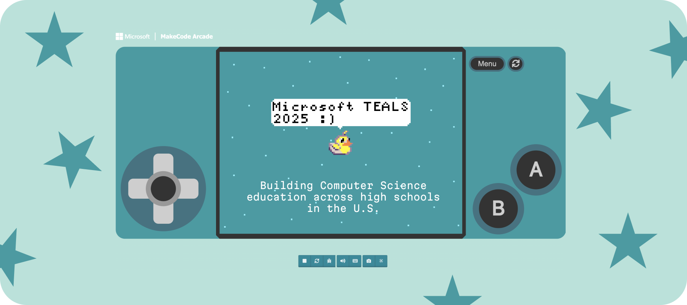

View projects in game design, data visualization, mobile applications, & more

Volunteer Work
Jan - June 2025
Shana Cooper (Teacher)
Kiley Matschke
John Ryan
Python
Microsoft MakeCode Arcade
The Microsoft Philanthropies TEALS (Technology Education and Learning Support) Program is dedicated to building and broadening Computer Science education in high schools across the U.S. It pairs schools and volunteers who help to deliver robust Computer Science curricula to students.
I support an Introduction to Computer Science course that utilizes Microsoft MakeCode Arcade (more info on curriculum below) with one other volunteer, John. My schedule involves visiting the high school each week on Mondays and Wednesdays and volunteering for the full duration of the class period (~8:15-9am). The students typically warm up with a "Bell Ringer" activity and then engage in independent work through blocks and/or Python on MakeCode. The volunteers and I assist the teacher, Ms. Cooper, in addressing student questions and facilitating workflow. On Fridays, we meet briefly after class for a weekly teaching team sync, where we debrief successes from the week and areas of improvement for next time.
My high school has recently been focusing on building a strong gaming/coding curriculum. This made it a perfect fit for me, as I have been pursuing independent video game research for the past two years through my work at Barnard College's Vagelos Computational Science Center. The course I'm attached to has been using Microsoft MakeCode Arcade as the primary vessel for learning how to build and mod retro games.
The platform allows students to experiment with principles
of code through more rudimentary, block-style interactions.
As they build their games using the blocks from the sidebar,
they can see how things change in real-time to the left of
the screen. This is great for building students' independence
and confidence, as they can understand how modifications to
the blocks have a direct effect on the overall output.
Once the students are comfortable with the blocks, they can
then advance to more traditional styles of code. By clicking
the Python / JavaScript tab at the top, they can view their
block code in the format of a true coding language. This
permits them to observe how each block of code translates
into Python and/or JavaScript, which eases the transition into
direct programming.
Experiment with MakeCode here!